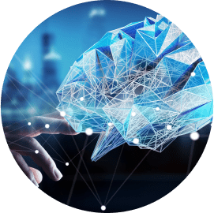
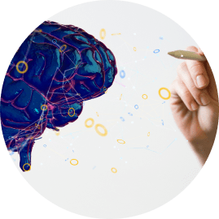
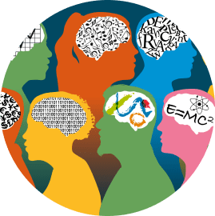
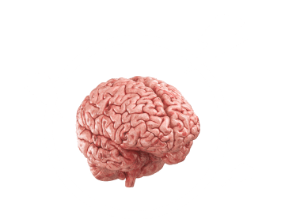

Taste for talent
Вкус к таланту
Запатентованная система тестирования по методу
нейрометрии позволяет выявить потенциал любого человека и подобрать сферу
деятельности, где он сможет добиться максимального успеха.

Изучению влияния нейронных связей на жизнедеятельность
человека посвящено более 150 тысяч научных исследований только в однойоткрытой базе academia.edu

30 лет исследований связей ритмов с ресурсностью,
которые в настоящее время помогают «диагностировать» не только таланты,
но и зависимость, рисковость, осознанность и многие другие важные особенности
вашей личности.

Диагностика таланта с помощью метода нейрометрии
способностей по ритмам мозга Talent Quotient (TQ) запатентована российскими
специалистами и уже используется в 23 странах для объективной оценки
навыков человека.
160
ГОРОДОВ В 18 СТРАНАХ НА 3 КОНТИНЕНТАХ
50000
СЕМЕЙ, ДЕТЕЙ,
ПОДРОСТКОВ, ВЗРОСЛЫХ
435
ПСИХОЛОГОВ, КОУЧЕЙ,
КАДРОВИКОВ
Думаете о выборе профессии и образования?
Не можете найти свое призвание?
Не знаете, как стать востребованным и хорошо зарабатывать?
Не знаете какое направление развития выбирать для вашего ребенка?
КОНСУЛЬТАЦИЯ ПО TQ-ОТЧЕТУ ДАСТ ОТВЕТЫ НА ВАЖНЫЕ ВОПРОСЫ
Узнайте ваши таланты по ритмам мозга
Повысьте свою уверенность и самооценку
На 50% улучшите память, выберите хобби и направление развития

Что такое нейрометрия?
Нейрометрия – метод диагностики способностей, особенностей и граней талантов, позволяющий
определить потенциал любого человека, подобрать сферу деятельности, где он сможет добиться
максимального успеха, и программу обучения, чтобы всесторонне раскрыть его дарования.
Разработан на стыке трех областей: нейротехнологий, нейрофизиологии и нейропсихологии.
Во время тестирования записываются и анализируются без участия человека только ритмы мозга,
а не ответы тестируемого. Поэтому текущие навыки и знания не влияют на конечный результат,
и мы получаем объективную картину талантов и способностей человека, которые помогут ему
реализоваться в профессии, хобби и жизни.
Нейрометрия будет полезна как детям, так и их родителям, а также всем тем, кто еще не раскрыл свои таланты и сильные личностные качества.
Как проводится
тестирование


Тестирование длится
30 минут
Нейродатчик, закрепленный на головном обруче, считывает сигналы природной
активности разных отделов мозга, которые активируются во время тестирования
задаваемыми вопросами.
Полученный подробный отчет с данными и инфографикой помогает «прочитать»
специалист-нейрометрист на консультации, чтобы дать ответы на вопросы о ваших
талантах и скрытых способностях, а также о перспективе дальнейшего гармоничного
применения их в жизни.
Чтобы записаться на тестирование
звоните по телефону горячей линии